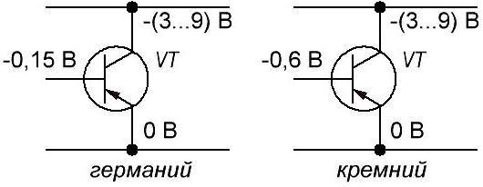
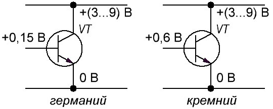
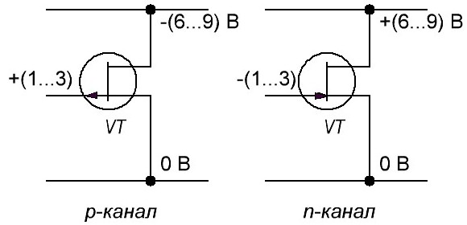
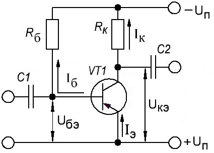
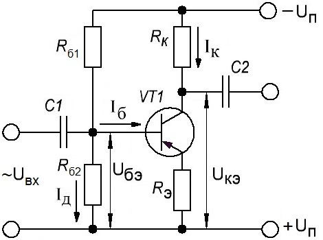
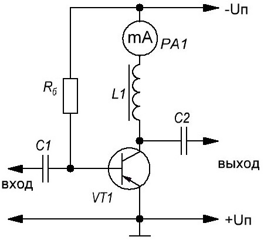

Установка режимов работы транзисторов
Для хорошей работы устройства, собранного на транзисторах, необходимо чтобы на их электроды было подано определенной величины и полярности постоянное напряжение. Примерные значения напряжений подаваемых на коллектор, базу и эмиттер для транзисторов прямой проводимости (р-n-р) приведен на рис. 1, а обратной (n-р-n) проводимости — на рис. 2.
Включение в цепи n-р-n и р-n-р транзисторов отличается только полярностью напряжения на коллекторе и смещением. Кремниевые и германиевые транзисторы одной и той же структуры отличаются между собой только значением напряжения смещения. У кремниевых оно приблизительно на 0,45 В больше, чем у германиевых. Напряжения смещения показаны относительно эмиттера, но на практике напряжение на электродах транзисторов показывают относительно общего провода устройства.

Рис. 1 - Примерные значения напряжений, подаваемых на коллектор, базу и эмиттер
для транзисторов прямой проводимости р-n-р

Рис. 2 - Примерные значения напряжений, подаваемых на коллектор, базу и эмиттер
для транзисторов обратной проводимости n-р-n
При этом надо также придерживаться нескольких правил:
- Рабочие напряжения, токи и мощности рассеивания применяемых транзисторов должны быть меньше предельных значений.
- Нельзя подавать напряжение на транзистор, если у него отключена база.
- Базовый вывод следует подключать в схему в первую очередь и отключать в последнюю.
Примерные значения величин напряжений смещения для полевых транзисторов с каналом типа р и с каналом типа n даны на рис. 3.

Рис. 3 - Примерные значения величин напряжений смещения
для полевых транзисторов с каналом p-типа и с каналом n-типа
При налаживании радиоэлектронных конструкций в первую очередь нужно измерить потребляемый ток в режиме покоя. Если его значение близко к требуемому, то тогда переходят к установлению необходимых токов коллекторов транзисторов. На схемах место установки тока показывают крестиком («х»), а резистор, которым это делают — звездочкой («*»). Опыт показывает, что для транзисторов безопаснее измерять напряжение, а не ток. В большинстве схем эти величины взаимосвязаны. Достаточно знать одну из величин, а другую можно определить расчетным путем.
Настройку устройства производят по каскадам. В каскадах транзисторных устройств в основном используется три основных способа подачи напряжения смещения к базе транзистора.
Рассмотрим работу транзисторного каскада с резисторной нагрузкой без стабилизации режима (рис. 4).

Рис. 4 - Принципиальная схема транзисторного каскада с резисторной нагрузкой без стабилизации режима
При отсутствии входного сигнала начальные напряжения на электродах транзисторов следующие:
Uкэ = Uп- IкRк
Uбэ = Uп — IбRб.
В приведенных формулах напряжения смещения Uбэ для германиевых и кремниевых транзисторов должны иметь значения в соответствии с рис. 1, 2. Из этих выражений видно, что от величины сопротивления резистора Rб зависит величина напряжения смещения Uбэ, а следовательно, и начальное положение рабочей точки на характеристике транзистора. На хорошую работу такого каскада большое влияние имеет точность, с какой для данного транзистора, имеющего коэффициент усиления по току β, подобраны сопротивления резисторов Rб и Rк. Работу каскада при этом можно проконтролировать по напряжению на резисторе Rк или по напряжению между коллектором и эмиттером транзистора. Зная Uп и β, можно вычислить величину управляющего тока коллектора транзистора по формуле
Iк = βUп/Rб,
Если величина сопротивления резистора Rк = 500…600 Ом, то напряжение на нем удобнее определить, как разницу между питающим напряжением и напряжением коллектор — эмиттер. Для маломощных низкочастотных и высокочастотных транзисторов напряжение коллектор-эмиттер принимают 2…2,5 В, а ток коллектора — 0,5 мА. Транзисторы МП39…МП41 имеют максимальное усиление по току, когда ток коллектора 1…2 мА. У транзисторов П401…П403, П416 и т. п. усиление растет с ростом тока коллектора до 5…8 мА. От напряжения на коллекторе усиление по току существенно не зависит, при его повышении улучшается устойчивость высокочастотных каскадов. При замене в рассматриваемом каскаде транзистора с одним значение β на транзистор с отличным значением β, приходится снова подбирать значения Rб и Rк. На усиление транзистора с такой простой схемой смешения оказывает влияние помимо разброса параметров транзисторов еще и изменение температуры окружающей среды.
Более стабилен в работе каскад, имеющий термостабилизацию по схеме, представленной на рис. 5.
В этом случае к напряжению, измеренному между коллектором и плюсом питания, добавляется напряжение на резисторе Rэ, которое составляет приблизительно 1 В. Если считать, что напряжение между коллектором и эмиттером может быть снижено до 1,5 В, так как каскад стабилизирован, то общее напряжение между коллектором и «землей», как и первом случае, должно быть не менее 2,5 В. Указанные режимы являются ориентировочными, средними в случае работоспособных транзисторов. В каскадах, где режимы отличаются от рекомендованных на 20…30 %, подстраивание их режимов на первой стадии налаживания можно не проводить.

Рис. 5 - Принципиальная схема транзисторного каскада с резисторной нагрузкой с термостабилизацией режима
Установку режима работы транзистора можно производить резистором Rб1, который соединен с базой транзистора. Для увеличения тока коллектора необходимо сопротивление резистора Rб1 уменьшить, а для уменьшения, наоборот, увеличить. Для удобства настройки каскада резистор Rб1 составляют из двух резисторов: одного переменного и одного постоянного с сопротивлением 10…30 кОм. Изменяя сопротивление переменного резистора, добиваются необходимого тока коллектора. Омметром измеряют получившееся сопротивление двух резисторов и затем вместо них впаивают один резистор, величина сопротивления которого равна измеренному значению двух сопротивлений.
Ток коллектора в схеме со стабилизацией можно оценить, измерив напряжение на резисторе Rэ. Если разделить величину падения напряжения (в вольтах) на величину Rэ (в килоомах), то получим ток эмиттера в миллиамперах. Ток коллектора меньше тока эмиттера на величину базового тока, а последний не превышает 5% Iэ. Поэтому можно считать, что Iэ ≈ Iк.
В каскадах с индуктивной нагрузкой без стабилизации режима работы напряжение на коллекторе равняется напряжению источника питания и здесь необходим контроль тока коллектора (рис. 6). Регулировку такого каскада также производят подбором величины сопротивления резистора Rб.

Рис. 6 - Принципиальная схема каскада с индуктивной нагрузкой без стабилизации режима работы